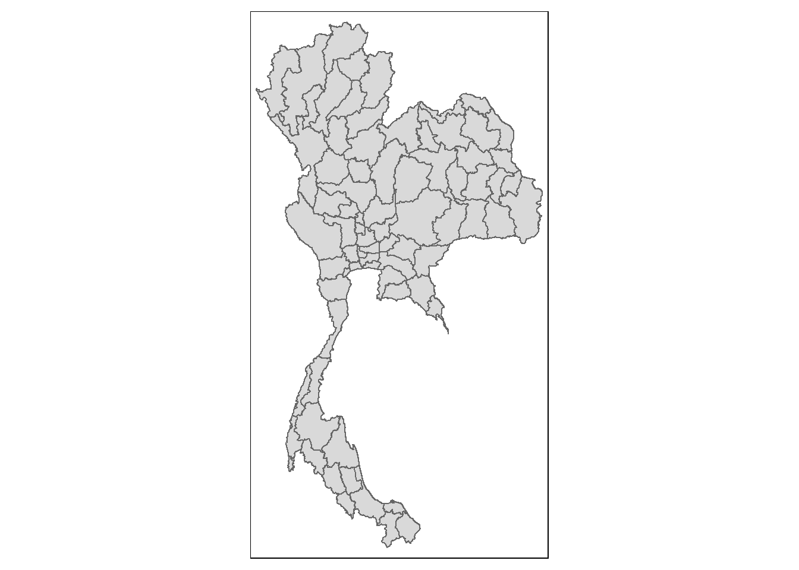
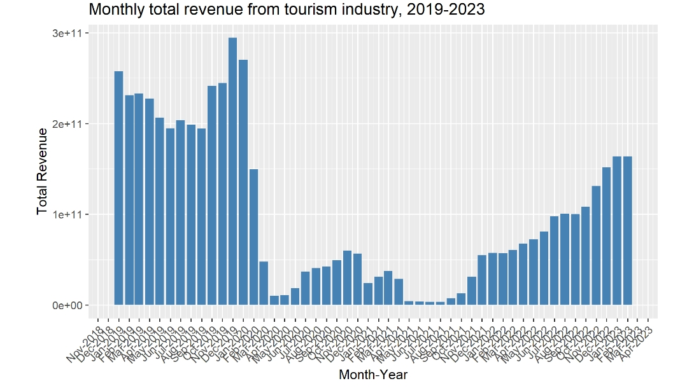
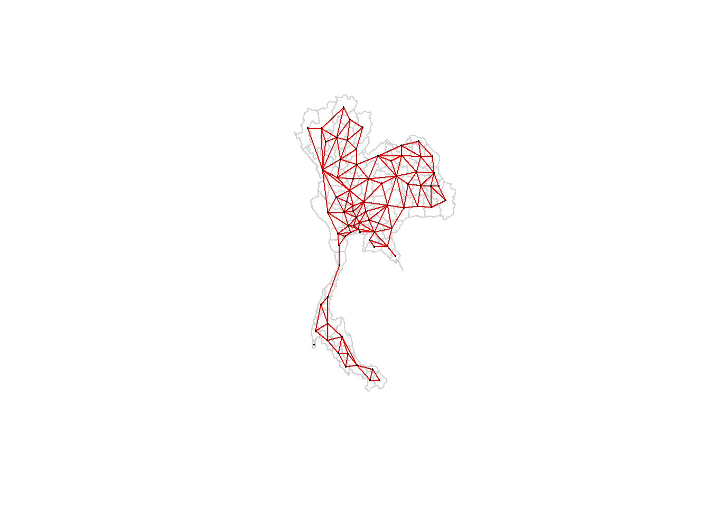

pacman::p_load(sf, spdep, tmap, tidyverse, patchwork,spacetime)Take-home Exercise 2: Discovering impacts of COVID-19 on Thailand tourism economy at the province level using spatial and spatio-temporal statistics
1 Set the Scene
Tourism is a major contributor to Thailand’s economy, making up about 20% of GDP. In 2019, the industry generated 90 billion US\(, but due to the COVID-19 pandemic, this dropped to 24 billion US\) in 2020. Since September 2021, tourism revenues have been gradually recovering. However, the economic benefits are not evenly spread across the country, with key provinces like Bangkok, Phuket, Chiang Mai, Sukhothai, and Phetchaburi dominating the sector. In this exercise,we need to explore whether the tourism economy shows spatial and spatio-temporal dependence, and if so, identify clusters, outliers, and emerging hot or cold spots.
2 Setting the Analytical Tools
3 Data Collection
Two data sets will be used in this exercise:
Thailand Domestic Tourism Statistics at Kaggle. This dataset contains statistics on domestic tourism in Thailand from Jan 2019 to Feb 2023, broken down by province. The datasetincludes information on the number of tourists, the occupancy rate, and the profits generated by tourism in each province, as wel as thenationality of the tourists.
Thailand - Subnational Administrative Boundaries at HDX. This dataset has been used in the last exercise.
Use below codes to import these two raw datasets.
thai_province <- st_read(dsn="data/geospatial", layer = 'tha_admbnda_adm1_rtsd_20220121')Reading layer `tha_admbnda_adm1_rtsd_20220121' from data source
`D:\FuWanqian\ISSS608-VAA\Takehome_Ex\Takehome_Ex02\data\geospatial'
using driver `ESRI Shapefile'
Simple feature collection with 77 features and 16 fields
Geometry type: MULTIPOLYGON
Dimension: XY
Bounding box: xmin: 97.34336 ymin: 5.613038 xmax: 105.637 ymax: 20.46507
Geodetic CRS: WGS 84thai_tour <- read_csv("data/aspatial/thailand_domestic_tourism_2019_2023_ver2.csv")
head(thai_tour,5)# A tibble: 5 × 7
date province_thai province_eng region_thai region_eng variable value
<date> <chr> <chr> <chr> <chr> <chr> <dbl>
1 2019-01-01 กรุงเทพมหานคร Bangkok ภาคกลาง central ratio_t… 93.4
2 2019-01-01 ลพบุรี Lopburi ภาคกลาง central ratio_t… 61.3
3 2019-01-01 พระนครศรีอยุธยา Phra Nakhon Si… ภาคกลาง central ratio_t… 73.4
4 2019-01-01 สระบุรี Saraburi ภาคกลาง central ratio_t… 67.3
5 2019-01-01 ชัยนาท Chainat ภาคกลาง central ratio_t… 79.3We notice that there are 8 kinds of values in Variable, so we transforms the Variable column values into separate variables.
thai_tour_wide <- thai_tour %>%
pivot_wider(names_from = variable, values_from = value)
saveRDS(thai_tour_wide,"data/aspatial/thai_tour_wide.rds")And use below codes to generate a spatio-temporal dataset of thai tourism economy indicator.
# change the column name to get identifier
colnames(thai_tour_wide)[colnames(thai_tour_wide) == "province_eng"] <- "ADM1_EN"#align the format
thai_tour_wide$ADM1_EN <- tolower(thai_tour_wide$ADM1_EN)
thai_province$ADM1_EN <- tolower(thai_province$ADM1_EN)## thai_tour_spt <- spacetime(thai_tour_wide, thai_province,
## .loc_col = "ADM1_EN",
## .time_col = "date")
## is_spacetime_cube(thai_tour_spt)##saveRDS(thai_tour_spt,"data/aspatial/thai_tour_spt.rds")4 Global spatial autocorrelation analysis
4.1 Data preparation
4.1.1 Convert multi polygon to polygon
From below map, We can see that the thai_province geometry data is multipolygon, which may cause problems when calculating centroids. These smaller regions might shift the calculated centroid away from the province’s main landmass.
tm_shape(thai_province) +
tm_polygons()
Use the code below to convert multipolygon to polygon and select the largest one to represent the province.
thai_province_polygon<- thai_province %>%
st_cast("POLYGON")%>%
mutate(area=st_area(.))thai_province_cleaned<-thai_province_polygon%>%
group_by(ADM1_EN)%>%
filter(area == max(area))%>%
ungroup()%>%
select(-area)%>%
select(ADM1_EN)tm_shape(thai_province_cleaned) +
tm_polygons()
4.1.2 Perform relational join
The code chunk below will be used to update the attribute table of thailand’s SpatialPolygonsDataFrame with the attribute fields of thai_tour_wide dataframe.
thai_join <- left_join(thai_province_cleaned,thai_tour_wide) %>%
select(1:3, 12)any(is.na(thai_join))[1] TRUEThere are NA value in the dataframe after join. We infer that the NA is due to a name mismatch in the ADM1_EN column. Use below codes to check and align all the name.
# Get unique names from both datasets
bd_names <- unique(thai_province_cleaned$ADM1_EN)
tourism_names <- unique(thai_tour_wide$ADM1_EN)# Identify names in thai_province_cleaned not present in thai_tour_wide
mismatched_names <- setdiff(bd_names, tourism_names)
mismatched_names[1] "lop buri" "chai nat" "chon buri" "prachin buri"
[5] "buri ram" "si sa ket" "nong bua lam phu" "phangnga" mismatched_names2 <- setdiff(tourism_names, bd_names)
mismatched_names2[1] "lopburi" "chainat" "chonburi" "prachinburi"
[5] "phang nga" "buriram" "sisaket" "nong bua lamphu"name_fixes <- c(
"lop buri" = "lopburi",
"chai nat" = "chainat",
"chon buri" = "chonburi",
"prachin buri" = "prachinburi",
"buri ram" = "buriram",
"si sa ket" = "sisaket",
"nong bua lam phu" = "nong bua lamphu",
"phangnga" = "phang nga"
)# Apply the fixes to the 'ADM1_EN' column in thai_province_cleaned
thai_province_cleaned$ADM1_EN <- sapply(thai_province_cleaned$ADM1_EN, function(x) {
if (x %in% names(name_fixes)) {
name_fixes[x]
} else {
x
}
})thai_last <- left_join(thai_province_cleaned,thai_tour_wide) %>%
select(1:3, 12)
any(is.na(thai_last))[1] FALSEcolSums(is.na(thai_last)) ADM1_EN geometry date revenue_all
0 0 0 0 4.1.3 Calculate yearly revenue
thai_last <- thai_last %>%
mutate(year = format(as.Date(date), "%Y"))
thai_last_summary <- thai_last %>%
group_by(ADM1_EN, year) %>%
summarise(revenue_all = sum(revenue_all, na.rm = TRUE))saveRDS(thai_last_summary,"data/aspatial/thai_last_summary.rds")thai_last_summary<-readRDS("data/aspatial/thai_last_summary.rds")thai_summary2019 <- thai_last_summary %>%
filter(year == 2019)thai_summary2021 <- thai_last_summary %>%
filter(year == 2021)thai_summary2023 <- thai_last_summary %>%
filter(year == 2023)4.3 Global Measures of Spatial Autocorrelation

From the figure, the revenue of the Thai tourism industry changed significantly before and after covid-19. The revenue from the tourism industry has been gradually recovering since September 2021. Therefore, we selected the years 2019, 2021, and 2023 to represent different periods of COVID-19. For these years, we will compute global spatial autocorrelation statistics and perform a spatial complete randomness test for global spatial autocorrelation.
4.3.1 Computing Contiguity Spatial Weights
wm_q2019 <- poly2nb(thai_summary2019, queen=TRUE, snap = 1)summary(wm_q2019)Neighbour list object:
Number of regions: 77
Number of nonzero links: 352
Percentage nonzero weights: 5.93692
Average number of links: 4.571429
1 region with no links:
48
2 disjoint connected subgraphs
Link number distribution:
0 1 2 3 4 5 6 7 8 9
1 1 5 17 15 17 10 5 4 2
1 least connected region:
71 with 1 link
2 most connected regions:
17 69 with 9 linkswm_q2021 <- poly2nb(thai_summary2021, queen=TRUE, snap = 1)wm_q2023 <- poly2nb(thai_summary2023, queen=TRUE, snap = 1)4.3.2 Visualize Contiguity Spatial Weights
longitude <- map_dbl(thai_summary2023$geometry, ~st_centroid(.x)[[1]])
latitude <- map_dbl(thai_summary2023$geometry, ~st_centroid(.x)[[2]])coords <- cbind(longitude, latitude)
head(coords) longitude latitude
[1,] 104.7414 15.89261
[2,] 100.3485 14.62354
[3,] 100.6235 13.77183
[4,] 103.7109 18.14879
[5,] 102.9567 14.81998
[6,] 101.4254 13.60649plot(thai_summary2023$geometry, border="lightgrey")
plot(wm_q2023, coords, pch = 19, cex = 0.2, add = TRUE, col = "red")
4.3.3 Convert the neighbors list to a weights list
rswm_q2019 <- nb2listw(wm_q2019,
style="W",
zero.policy = TRUE)rswm_q2021 <- nb2listw(wm_q2021,
style="W",
zero.policy = TRUE)rswm_q2023 <- nb2listw(wm_q2023,
style="W",
zero.policy = TRUE)4.3.4 Global Measures of Spatial Autocorrelation: Moran’s I
Morans_I2019 <- moran.test(thai_summary2019$revenue_all,
listw=rswm_q2019)
print(Morans_I2019)
Moran I test under randomisation
data: thai_summary2019$revenue_all
weights: rswm_q2019
n reduced by no-neighbour observations
Moran I statistic standard deviate = -0.34222, p-value = 0.6339
alternative hypothesis: greater
sample estimates:
Moran I statistic Expectation Variance
-0.029251263 -0.013333333 0.002163547 Morans_I2021 <- moran.test(thai_summary2021$revenue_all,
listw=rswm_q2021)
print(Morans_I2021)
Moran I test under randomisation
data: thai_summary2021$revenue_all
weights: rswm_q2021
n reduced by no-neighbour observations
Moran I statistic standard deviate = -0.46226, p-value = 0.6781
alternative hypothesis: greater
sample estimates:
Moran I statistic Expectation Variance
-0.037115756 -0.013333333 0.002646947 Morans_I2023 <- moran.test(thai_summary2023$revenue_all,
listw=rswm_q2023)
print(Morans_I2023)
Moran I test under randomisation
data: thai_summary2023$revenue_all
weights: rswm_q2023
n reduced by no-neighbour observations
Moran I statistic standard deviate = -0.28205, p-value = 0.611
alternative hypothesis: greater
sample estimates:
Moran I statistic Expectation Variance
-0.027926448 -0.013333333 0.002676932